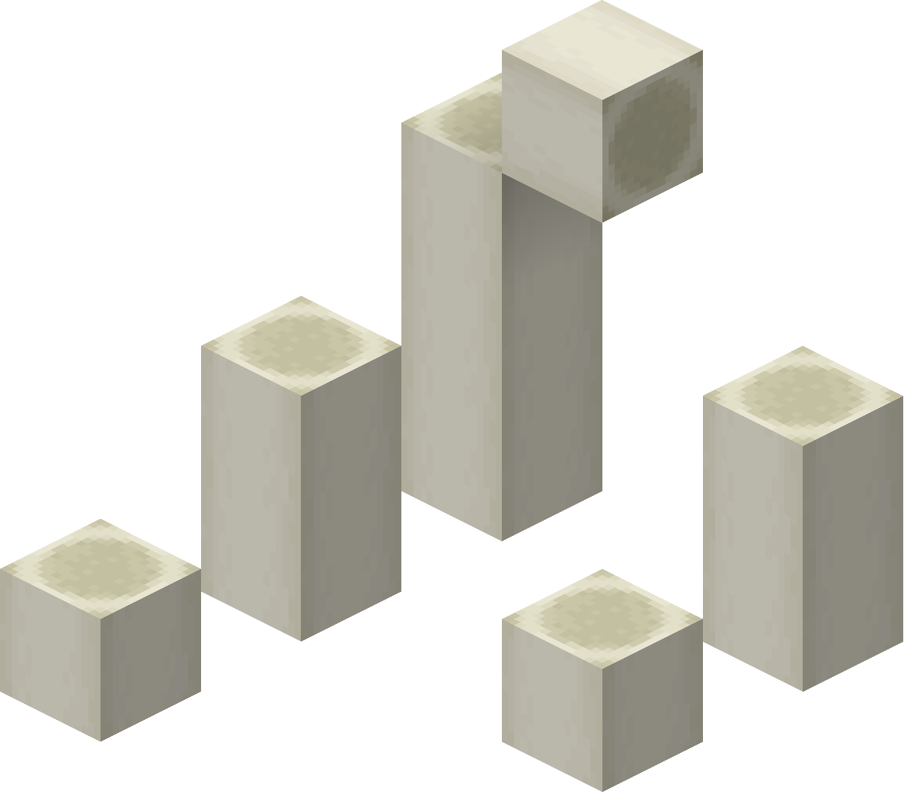
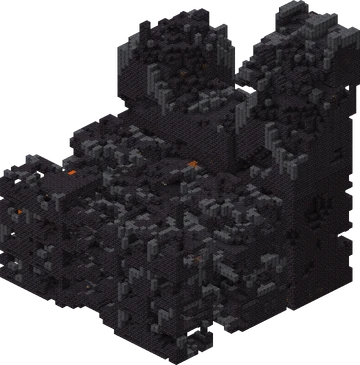
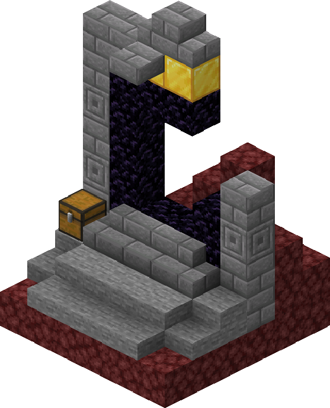

Las fortalezas del Nether son grandes estructuras tipo castillo compuestas de ladrillos del Nether. Esta estructura suele encontrarse cruzando mares de lava o excavando túneles a través del netherrack.
Esta estructura es el único lugar donde aparecen blazes y esqueletos wither, haciendo que las fortalezas sean la puerta de entrada a ambos jefes del juego: el dragón del End y el Wither. Las fortalezas también contienen generadores de monstruos de Blaze, así como pequeñas granjas de verrugas del Nether donde se puede obtener verrugas del Nether. Las fortalezas del Nether se pueden encontrar en todos los biomas del Nether.
Las fortalezas del Nether son grandes estructuras tipo castillo compuestas de ladrillos del Nether. Esta estructura suele encontrarse cruzando mares de lava o excavando túneles a través del netherrack.
Esta estructura es el único lugar donde aparecen blazes y esqueletos wither, haciendo que las fortalezas sean la puerta de entrada a ambos jefes del juego: el dragón del End y el Wither. Las fortalezas también contienen generadores de monstruos de Blaze, así como pequeñas granjas de verrugas del Nether donde se puede obtener verrugas del Nether. Las fortalezas del Nether se pueden encontrar en todos los biomas del Nether.

Los fósiles del Nether son estructuras compuestas por bloques óseos. Tienen 14 diseños diferentes. A diferencia de los fósiles del Overworld, el mineral de carbón no se genera dentro de estos fósiles. Esta estructura se genera exclusivamente dentro de los biomas de los valles de arena del alma. Los fósiles del Nether a veces se generan con un ghast seco a su lado.
Los restos de los bastiones son grandes fortificaciones hechas de piedra negra, ladrillos de piedra negra y basalto. Dentro de estas estructuras se pueden encontrar una gran cantidad de bloques de oro y cofres de botín. Se generan en cuatro variantes distintas, cada una con su propia estructura y botín únicos. Estas estructuras están habitadas por piglins y brutos piglins, y en ciertas variantes también por hoglins. Estas estructuras se generan dentro de cualquier bioma del Nether excepto en los deltas de basalto.
Una estructura que contiene lo que parece ser un portal del Nether destruido y varios tipos de materiales de piedra o piedra negra, al generar en el Overworld o el Nether, respectivamente. El Netherrack se genera en el suelo alrededor del portal, y un cofre que contiene botín se genera con la estructura. Estas estructuras pueden encontrarse en cualquier bioma del Overworld y del Nether.